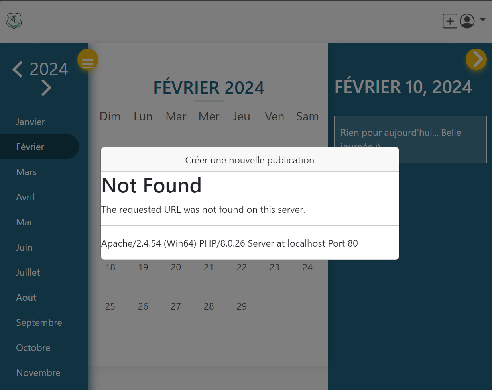

La compétence "Optimiser" du parcours B en B.U.T. Informatique vise à maîtriser la conception d'applications informatiques en adéquation avec des critères de performance spécifiques tels que l'efficacité en temps d'exécution, la précision et l'économie des ressources. Elle implique d'améliorer la performance des programmes dans des contextes contraignants, de réduire l'impact environnemental des applications et de déployer des solutions à la fois adaptées et efficientes. Cette compétence se construit à travers une montée en complexité, débutant par la compréhension et la construction d'algorithmes simples, puis évoluant vers le choix et l'application d'algorithmes plus sophistiqués et de structures de données complexes pour répondre de manière optimale aux problèmes posés, en tenant compte de la sécurité des données et des impacts environnementaux et sociaux.
Trace n°1 - Diagramme UML de l'application web Altius
La validation des composantes essentielles CE2.01 et CE2.03 à travers le projet "Altius" se manifeste spécifiquement dans le développement et l'application du diagramme UML. En prenant l'exemple de la modélisation des classes `Evenement`, `PMR` (Personne à Mobilité Réduite), et `StadeSportif`, nous observons comment la formalisation de ces entités répond à des situations complexes (CE2.01) tout en intégrant des schémas de raisonnement efficaces (CE2.03).
Pour la CE2.01, le diagramme UML est une représentation claire de la complexité inhérente à la gestion des événements accessibles. Chaque classe est dotée d'attributs spécifiques qui capturent des détails essentiels pour l'accès aux informations par des personnes à mobilité réduite. Par exemple, la classe `PMR` inclut des attributs tels que le nombre de places disponibles dans le parking PMR, ce qui reflète une modélisation des besoins spécifiques et complexes des utilisateurs. Cette formalisation détaillée aide à structurer le système d'information de manière à ce qu'il soit non seulement complet mais aussi extrêmement adapté aux exigences fonctionnelles et non fonctionnelles, comme la rapidité de traitement et la sécurité des données.
En ce qui concerne la CE2.03, l'utilisation de schémas de raisonnement est évidente dans la manière dont les classes sont organisées et interagissent. L'héritage entre `Evenement` et `EvenementSportif` montre un schéma de raisonnement où des propriétés générales des événements sont héritées par des événements plus spécifiques, permettant ainsi une gestion simplifiée mais efficace des informations. De plus, la relation entre `Evenement` et `LieuEvenement` via l'interface `Hébergeur` montre une application de polymorphisme, facilitant l'adaptation du système à différents types de lieux sans redondance de code. Ce type de raisonnement orienté objet permet non seulement de maintenir le système évolutif et facile à maintenir mais aussi de s'assurer que les utilisateurs finaux reçoivent des informations précises et pertinentes adaptées à leurs besoins spécifiques.
L'intégration de ces deux composantes dans la conception de "Altius" via le diagramme UML a donc permis de formaliser des solutions à des problèmes complexes tout en utilisant des schémas de raisonnement structurés pour améliorer l'expérience utilisateur et répondre de manière efficace et pertinente aux défis posés par la facilitation de l'accès aux événements pour les personnes à mobilité réduite. Ce faisant, le diagramme UML n'est pas seulement un outil de documentation, mais un cadre actif de développement et d'amélioration continue du système.

Trace n°2 - Exemple d'erreur de navigation dans l'application web Altius
L'erreur 404 capturée dans l'interface de l'application Altius offre un exemple concret de la manière dont les problèmes de navigation et de routage peuvent être utilisés pour valider et justifier les choix de conception selon la composante essentielle CE2.04. Ce type d'erreur, généralement lié à un lien brisé ou une route mal configurée, a servi de catalyseur pour une analyse approfondie et une refonte des mécanismes de gestion des routes au sein de l'application. Pour répondre efficacement à ce défi, j'ai d'abord identifié toutes les routes potentiellement problématiques par une revue de code exhaustive et a ensuite procédé à leur correction pour assurer une navigation sans faille.
En parallèle, l'approche de gestion des erreurs a été renforcée par l'implantation de pages d'erreur personnalisées. Ces pages ne se contentent pas de signaler un problème; elles offrent également des suggestions d'actions à l'utilisateur, tels que des liens vers la page d'accueil ou la page de contact, et des outils de recherche pour rediriger l'utilisateur vers des ressources valides, améliorant ainsi son expérience malgré l'interruption. Cette stratégie vise non seulement à minimiser l'impact des erreurs, mais aussi à récupérer la confiance de l'utilisateur en fournissant des solutions immédiates et utiles.
Pour s'assurer que les améliorations étaient efficaces, une série de tests d'intégration et d'interface utilisateur ont été réalisés, simulant divers parcours de navigation pour détecter et corriger les failles avant le déploiement. Ces tests, combinés à des sessions de feedback utilisateur, ont permis de valider que les modifications apportées résolvaient les problèmes sans introduire de nouveaux bugs. Les résultats de ces tests ont montré une réduction significative des erreurs de routage et une amélioration notable de la satisfaction utilisateur, confirmant ainsi l'adéquation des solutions implémentées avec les besoins des utilisateurs.
En définitive, ce processus rigoureux de résolution de problèmes, de tests, et de validation continue illustre parfaitement comment j'ai su non seulement répondu à un défi technique, mais a également renforcé la robustesse de l'application Altius. Cette démarche méthodique confirme que les choix de conception étaient bien fondés et que les résultats obtenus étaient en alignement direct avec les objectifs initiaux du projet, attestant ainsi de l'acquisition effective de la CE2.04 par la justification des choix de conception et la validation des résultats dans un contexte réel d'utilisation.

Trace n°2 - Aperçu du caroussel du projet Altius
> Lien vers le post
Le développement d'Altius m'a permis de saisir profondément comment la technologie peut être mise au service des personnes, en particulier celles confrontées à des défis spécifiques d'accessibilité. En intégrant des fonctionnalités destinées aux personnes à mobilité réduite, j'ai appris l'importance cruciale de concevoir des outils qui ne se limitent pas à répondre à des besoins fonctionnels, mais qui facilitent et enrichissent véritablement la vie sociale des utilisateurs. Cette expérience m'a montré que la technologie, lorsqu'elle est appliquée avec considération et adaptée aux besoins de ses utilisateurs, peut briser des barrières significatives et contribuer à l'égalité d'accès à la vie culturelle et sociale.
Le volet covoiturage de "Altius", par exemple, a été conçu non seulement pour réduire l'empreinte carbone mais aussi pour faciliter les interactions sociales entre individus qui autrement pourraient éprouver des difficultés à participer à des événements en raison de limitations physiques ou de restrictions de transport. Cette fonctionnalité promeut une intégration sociale active et une participation communautaire, ce qui est fondamental pour ceux qui se retrouvent souvent isolés par des obstacles physiques et logistiques. En offrant une plateforme qui facilite ces interactions, j'ai pris conscience que la technologie peut et doit servir de catalyseur pour la création d'un environnement plus inclusif et accueillant pour tous.
Cette approche centrée sur l'utilisateur a renforcé mon engagement envers le développement de solutions qui sont non seulement techniquement robustes mais aussi profondément humaines. En écoutant et en répondant aux besoins exprimés par les utilisateurs, j'ai compris que la valeur d'une innovation technologique réside autant dans son impact social que dans sa performance technique. Ainsi, à travers Altius, j'ai embrassé un rôle qui dépasse la simple programmation pour inclure la facilitation d'une vie plus riche et plus connectée pour les personnes à mobilité réduite, affirmant le potentiel de la technologie en tant qu'outil puissant pour le progrès social.

Trace n°4 - Visuel de l'interface de modification des informations de l'utilisateur
L'écran de modification des informations de l'utilisateur de l'application "Altius" a servi de plateforme pratique pour explorer et renforcer ma compréhension des enjeux de la sécurisation des données personnelles, aligné sur l'apprentissage critique AC22.03. La conception de cette interface utilisateur a impliqué une prise de conscience approfondie des risques potentiels et des mesures de sécurité nécessaires pour protéger les informations sensibles.
Tout d'abord, la sécurisation des modifications du mot de passe est cruciale. J'ai donc implémenté une procédure où l'utilisateur doit entrer son ancien mot de passe avant d'en choisir un nouveau, ce qui ajoute une couche supplémentaire de sécurité en vérifiant l'identité de l'utilisateur avant toute modification sensible. Cette étape est renforcée par l'exigence de confirmer le nouveau mot de passe, minimisant les risques d'erreurs accidentelles ou de modifications malveillantes.
En outre, la mise en place d'un système de validation côté serveur pour chaque champ garantit que toutes les informations fournies respectent des critères de sécurité spécifiques, tels que la complexité du mot de passe et la validité des adresses e-mail. Cette approche empêche efficacement les tentatives d'injection SQL et d'autres formes d'attaques qui pourraient compromettre les données de l'utilisateur.
La possibilité pour les utilisateurs de mettre à jour des informations telles que leur ville de résidence ou leur adresse e-mail souligne également l'importance de l'intégrité des données. Chaque modification est enregistrée avec une trace précise dans les journaux du système, permettant un audit et une rétroaction en cas de problème. Cela non seulement améliore la transparence et la confiance des utilisateurs dans le système, mais assure également que les modifications peuvent être vérifiées et, si nécessaire, annulées.
À travers le développement de cette interface, j'ai appris à équilibrer l'accessibilité des fonctionnalités avec les impératifs de sécurité, en veillant à ce que chaque aspect du processus de modification des informations de l'utilisateur soit sécurisé contre les accès non autorisés et les altérations malveillantes. Cette expérience a renforcé ma compréhension de la sécurité des applications web et m'a équipé des compétences pour anticiper et mitiguer les risques associés à la gestion des données sensibles.

Au cours du développement de l'application Altius, j'ai démontré une maîtrise avancée de la compétence Optimiser du parcours B en B.U.T. Informatique, en alignant chaque aspect du projet avec des critères de performance spécifiques. La conception de l'application a intégré des fonctionnalités cruciales telles que la localisation d'événements accessibles et les options de covoiturage, répondant efficacement aux besoins des personnes à mobilité réduite tout en favorisant une réduction de l'empreinte environnementale. J'ai appliqué des algorithmes et des structures de données optimisées pour assurer une rapidité d'exécution et une précision élevée, notamment dans la gestion et la sécurisation des données utilisateurs, comme en témoigne l'interface de modification des informations personnelles qui utilise des validations et des contrôles rigoureux pour garantir l'intégrité et la sécurité des données.
Mon approche a également inclus la mise en œuvre de mécanismes de gestion des erreurs robustes, assurant une expérience utilisateur fluide et sans interruption, même en cas de défaillances. En intégrant des tests d'intégration rigoureux et en recueillant des retours continus des utilisateurs, j'ai pu ajuster et améliorer les performances de l'application de manière itérative, garantissant que les solutions déployées étaient à la fois adaptées et efficientes.
Ainsi, la combinaison de ces éléments – l'amélioration continue des algorithmes, l'optimisation des ressources, l'attention portée à la sécurité des données et la considération des impacts sociétaux et environnementaux – illustre ma capacité à concevoir des applications informatiques performantes et bien adaptées à des contextes contraignants, validant ainsi mon niveau de maîtrise acquis dans la compétence Optimiser.